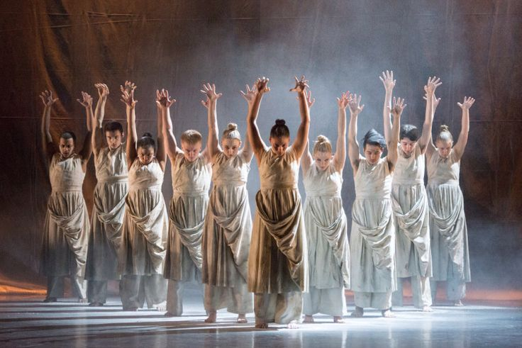
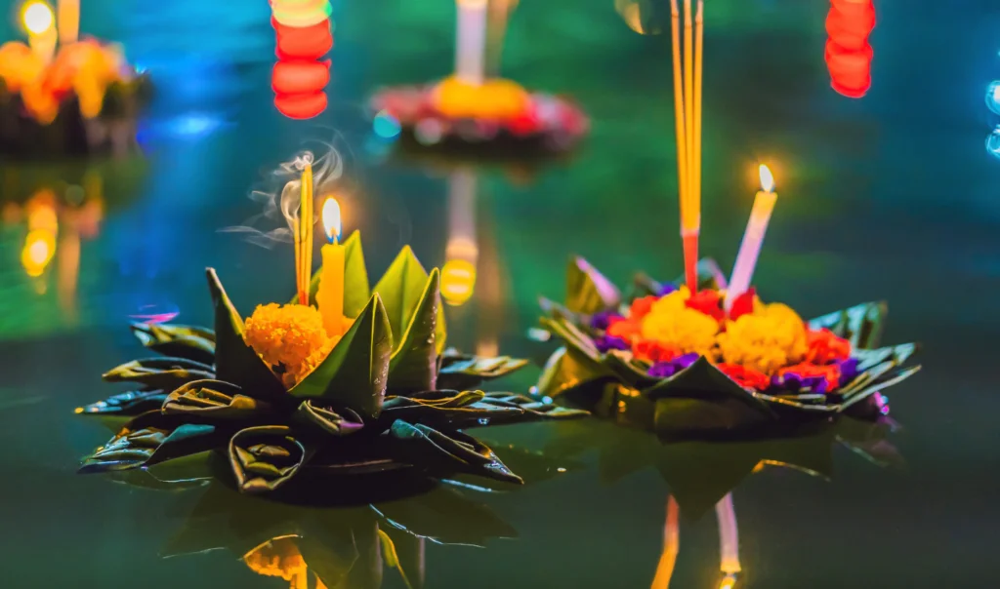
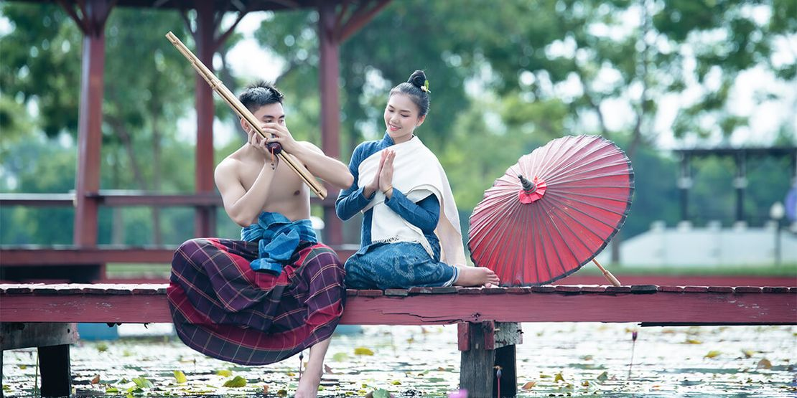

Taylandın Ənənəvi Mədəniyyəti
Tayland mədəniyyəti zəngin tarix və ənənələrlə doludur. Ölkənin mədəniyyəti, əsasən Buddizm dəyərləri üzərində qurulmuşdur və bu, gündəlik həyat tərzində, memarlıqda, musiqidə və digər sənət sahələrində özünü göstərir. Taylandın ənənəvi festivalları, rəqsləri, sənətkarlıq nümunələri və mətbəxi ölkəni dünyada unikal edir.Taylandın ən məşhur festivallarından biri olan Songkran Su Festivalı Yeni İl münasibətilə qeyd olunur və cəmiyyətin birlik ruhunu simvolizə edir. Loy Krathong isə işıqlı festivaldır, burada insanlar çaylara və göllərə gəmilər qoyaraq pis enerjidən qurtulmağı diləyirlər.Taylandın ənənəvi rəqsləri olan Khon və Lakhon qədim döyüşlər və mifoloji hekayələrlə bağlıdır. Rəqslərdə geyimlərin parlaq rəngləri və zərif hərəkətlər diqqəti çəkir. Əl sənətləri, xüsusən də ipək toxuma, taxta oyma və keramika da Tayland mədəniyyətinin mühüm hissəsidir.Taylandın mədəniyyətində ailə və icma münasibətləri də mühüm yer tutur. İnsanlar arasında qarşılıqlı hörmət və dostluq ölkənin cəmiyyət quruluşunun əsas prinsiplərindəndir.
Ənənəvi Rəqslər
Taylandın ənənəvi rəqsləri, xüsusilə "Khon" və "Lakhon" dramaları, Buddist əfsanələrdən və kral saray ənənələrindən ilhamlanır.

Festival və Bayramlar
Loy Krathong (İşıq Festivali) və Songkran (Yeni İl) Taylandın ən məşhur bayramlarındandır. Bu bayramlarda su ilə oyunlar oynanır və insanlar Buddizm rituallarını yerinə yetirirlər.

Tayland Sənətkarlığı
Əl işi ipək parçalar, oyma sənəti və qızıl əşyalar Tayland sənətkarlığının diqqət çəkən nümunələrindəndir.
